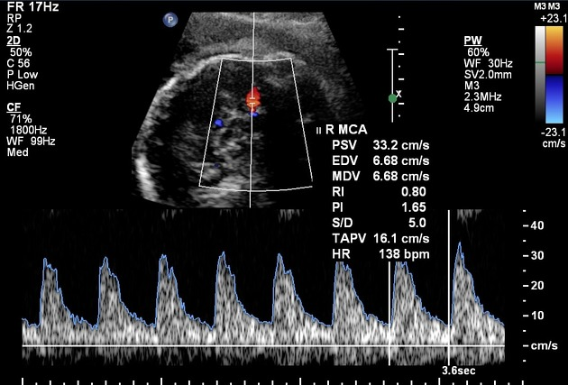
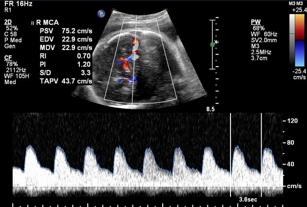

Página 13 · Sofrimento fetal crônico
Cerebral média e a centralização: os três órgãos nobres
Quando estudar a cerebral e por que ela
Quando estudar a cerebral e por que ela. Quando a diástole da umbilical afundou mas ainda está positiva (não tocou o zero), o próximo vaso a estudar é a artéria cerebral média — a avaliação da circulação fetal. Ela é escolhida por um motivo prático: é o vaso mais fácil de insonar na ultrassonografia.
O normal acima do p5 e o abaixo do p5 que dilatou
O normal > p5 e o < p5 que dilatou. Atenção à direção: o normal da cerebral média é ser um vaso de alta resistência, acima do percentil 5. Abaixo do percentil 5 significa resistência muito baixa — o vaso dilatou.
Interativo: toque num órgão para ver priorizado ou poupado.
O feto prioriza os três órgãos nobres — coração, cérebro e suprarrenal — e poupa osso, músculo e rim. O rim poupado urina menos → oligodrâmnio: a pegadinha central é achar que o rim é nobre (não é — é o poupado).A centralização — o que é
A centralização — o que é. A queda de resistência da cerebral média (vasodilatação) sinaliza centralização — redistribuição de fluxo. Ela acontece porque, chegando pouco sangue, o feto prioriza os órgãos mais nobres: não há sangue para todos.
Os três órgãos nobres
Os três órgãos nobres. Os três órgãos nobres priorizados na centralização são coração, cérebro e suprarrenal 🧠. A lógica: suprarrenal (função endócrina / homeostase mínima), cérebro (fluxo cerebral) e coração (a bomba que leva sangue ao resto do corpo). Registro fino: a suprarrenal e a coronária mostrariam a mesma vasodilatação da centralização; escolhe-se a cerebral média apenas por ser mais fácil de insonar.
É a suprarrenal, não o rim
É a suprarrenal, não o rim. Cuidado com a pegadinha mais escorregadia: o órgão nobre é a suprarrenal, NÃO o rim. Na centralização, o sangue é desviado de osso, músculo e rim; menos sangue ao rim faz o feto urinar menos, o que explica a oligodrâmnio do sofrimento crônico. Ou seja: o rim é poupado (sacrificado), e é por isso que a bolsa seca — mas o nobre continua sendo a suprarrenal.
Interativo: contraponha os dois eixos.
O normal da umbilical é ABAIXO do percentil 95; o da cerebral média é ACIMA do percentil 5. Um é “abaixo de”, o outro “acima de” — trocar isso é errar dois de uma vez. Abaixo de p5, a cerebral dilatou = centralização.As direções opostas dos percentis
As direções opostas dos percentis. A confusão clássica das direções opostas: o normal da umbilical é abaixo do percentil 95; o normal da cerebral média é acima do percentil 5 (pode chegar a 70). Um normal é “abaixo de”, o outro é “acima de” — trocar isso é errar dois de uma vez.
Com zero/reversa não se pede a cerebral
Com zero/reversa não se pede a cerebral. E uma regra de sequência que a banca cobra: com diástole zero ou reversa NÃO se pede a cerebral média — presume-se que ela já esteja alterada; zero e reversa são conceitualmente mais graves que uma cerebral alterada. A cerebral se estuda enquanto a diástole da umbilical ainda está positiva e afundando.

Normal (diástole baixa, alta resistência)
Centralizada (diástole cheia, PI < p5)No traçado normal, a diástole fica baixa em relação ao pico (alta resistência cerebral). No centralizado, a diástole permanece cheia e elevada — vasodilatação cerebral (brain-sparing), pulsatilidade baixa. O sinal está no componente diastólico, não no número isolado.
Henry Knipe (rID 37831) e Alexandra Stanislavsky (rID 62658), Radiopaedia.org · fonte / licença: CC BY-NC-SA 3.0
O traçado: a diástole “cheia” que denuncia
O traçado: a diástole “cheia” que denuncia. No traçado, a cerebral média normal tem diástole baixinha (grande distância entre sístole e diástole); a centralizada tem a diástole cheia. É a diástole “cheia” que deveria estar na umbilical, e não na cerebral, que denuncia a vasodilatação. A parte de Doppler é reconhecidamente a mais difícil da prova — por isso vale ler devagar aqui.
Quiz — fixação
Quais são os três órgãos nobres priorizados na centralização?
- Gabarito B. A trinca é coração, cérebro e suprarrenal.
- A inclui o rim, que é justamente poupado (sacrificado) na centralização — daí o feto urinar menos e fazer oligodrâmnio.
- C inclui o rim (poupado) e o fígado — a trinca é coração/cérebro/suprarrenal.
- D o pulmão não integra a trinca; o terceiro nobre é a suprarrenal.
Sobre o normal dos percentis, assinale a correta.
- Gabarito A. Direções opostas: umbilical < p95, cerebral > p5.
- B aplica a mesma direção aos dois vasos — o erro que a pegadinha explora.
- C inverte exatamente os dois normais (é o “anormal” de cada um).
- D também aplica a mesma direção aos dois — o erro das direções iguais.
Feto com diástole reversa na umbilical. Deve-se pedir o Doppler da cerebral média?
- Gabarito B. Com zero/reversa não se pede a cerebral — já se presume alterada, e o cenário é mais grave.
- A pedir a cerebral aí não muda a gravidade nem a conduta (parto).
- C a cerebral não substitui a conduta da umbilical grave.
- D o corte da cerebral é p5 (não p95); a alternativa mistura o percentil da umbilical.